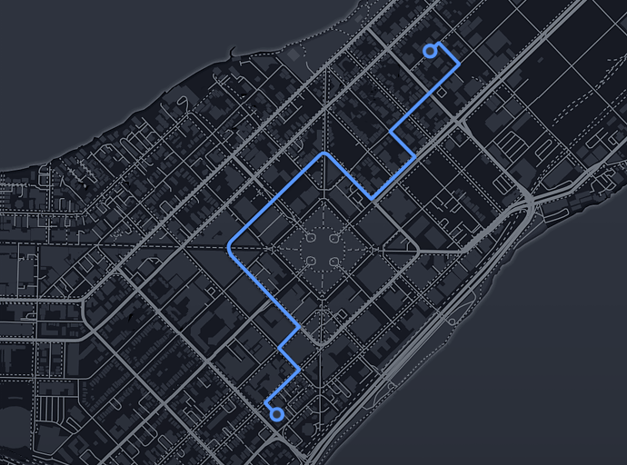

Hamm hamm
Dec. 24, 2018

Wait a minute. Wait a minute, Doc. Uhhh... Are you playing mario...It's so difficault..

Museum of football
11 N. Way St, Madison, WI 53703
Institute of Fine Cocktails
14 S. Hop Avenue, Madison, WI 53703